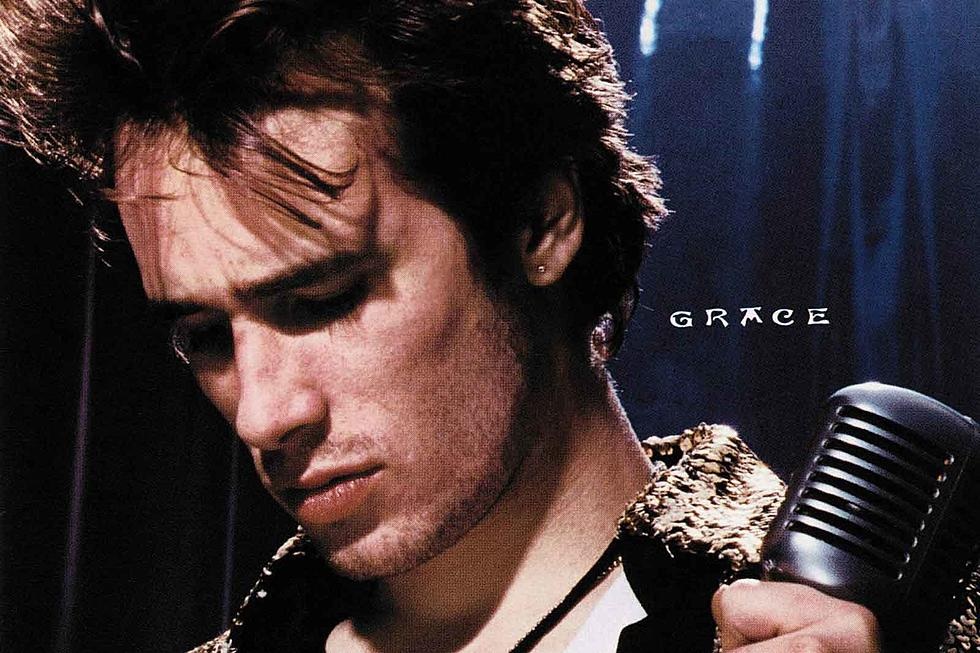

Jeff Buckley was born on November 17, 1966, in Anaheim, California. His father was Tim Buckley, a well-known folk and jazz musician. However, Jeff grew up estranged from his father due to his parents' separation when he was just eight years old. After his parents' separation, Jeff was raised primarily by his mother, Mary Guibert, who was also a musician and had a significant influence on his musical development. Throughout his childhood and teenage years, Jeff and his mother moved frequently, which led to a somewhat nomadic lifestyle. They lived in various parts of the United States, including Southern California and Orange County. Despite the absence of his father, Jeff Buckley was exposed to music from an early age. He showed a natural talent for singing and playing the guitar. His mother's musical background and influence played a crucial role in nurturing his musical abilities. Jeff began performing in bands during his teenage years, participating in the local music scene in Southern California. He gained valuable experience by playing in various genres, including rock, punk, and blues.
Jeff Buckley's father, Tim Buckley, was a significant influence on his musical tastes, despite their estranged relationship. Tim Buckley was known for his innovative approach to folk and jazz music, and his work undoubtedly left a mark on Jeff's musical sensibilities. In addition to his father's influence, Jeff Buckley had a broad and eclectic taste in music. He drew inspiration from a wide range of genres, including rock, blues, soul, punk, world music, and classical music. Buckley's vocal style was heavily influenced by singers such as Nina Simone, Edith Piaf, and Nusrat Fateh Ali Khan. He admired their emotive and expressive singing styles, which contributed to his own powerful and soulful vocal delivery. Before establishing his solo career, Jeff Buckley performed with several bands and musicians in Los Angeles during the 1980s. These experiences allowed him to develop his stage presence and musicianship.

In the early 1990s, Jeff Buckley decided to relocate to New York City with the aspiration of pursuing a solo career in music. He had been performing in various bands and local music scenes in Los Angeles but felt that New York offered greater opportunities and exposure. New York City has a rich and diverse music scene, known for its eclectic mix of genres and venues. Buckley believed that the city's vibrant atmosphere would provide him with a platform to showcase his talent and connect with a wider audience. Upon arriving in New York, Jeff Buckley faced the challenges of making a name for himself in a highly competitive and bustling music scene. He began performing at small, intimate venues across the city, often in Greenwich Village, known for its role in nurturing emerging artists. Jeff Buckley's performances at Sin-é helped him cultivate a dedicated fan base and gain recognition within the local music scene. His renditions of covers and original songs showcased his remarkable vocal range and emotional depth. During his time in New York City, Buckley recorded demo tapes of his original songs and covers. These recordings would later serve as the foundation for his debut album, "Grace."
Jeff Buckley's death was a deeply sorrowful event in the music industry, leaving fans and fellow musicians mourning the loss of a talented artist whose potential was tragically unfulfilled. His unique voice and music continue to inspire and resonate with audiences worldwide, ensuring that his memory lives on through his art. Jeff Buckley's death was the result of a drowning accident in the Wolf River Harbor, a tributary of the Mississippi River. He had been in Memphis to work on his sophomore album, following the success of his debut album, "Grace." On the evening of May 29, 1997, Buckley decided to go for a swim in the Wolf River Harbor.He was fully clothed at the time, wearing boots, jeans, and a t-shirt. It's believed that he was caught in the wake of a passing boat, which may have contributed to the accident. The water's strong currents and the weight of his clothes likely made it difficult for him to stay afloat. Jeff Buckley's tragic death cut short a burgeoning career that had garnered critical acclaim and a devoted fan base.